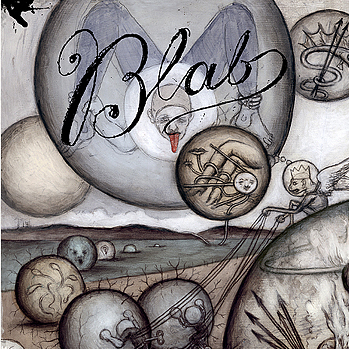
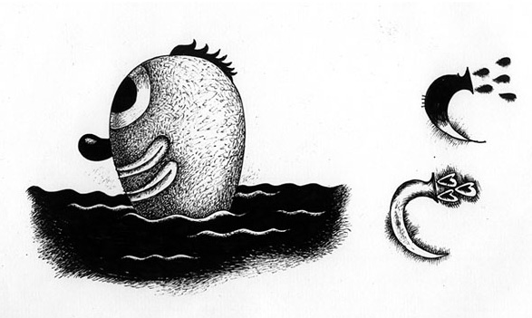
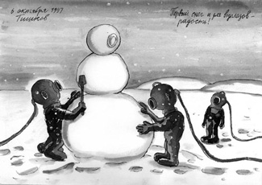
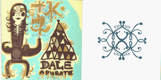
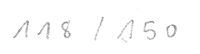
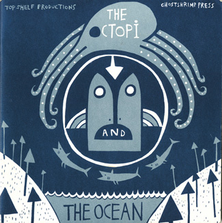

СДЕЛАЙ САМ
Персональное приглашение
Хочу воспользоваться положением в личных целях и пригласить вас, друзья, на коллективную выставку товарищества иллюстраторов «Цех», которая откроется в ДОМе 10-го числа. Называется Songbook, каждый нарисовал, как мог, по песне. Теперь нас почти 30 человек, в том числе Фёдор Сумкин, Ира Троицкая и special guest star Таня Кочергина. Если все будет благополучно, то там же выставим соответствующую книжицу.
И если все будет совсем благополучно, то это дело мы поставим на какой-никакой поток. Есть у меня полунесбыточная мечта о неком подобие журнала Blab, самого оторванного издания на свете — «Нью Йоркера для Мутантов».

Для этого, правда, нужно, чтобы сбылась мечта совсем уж безнадежная о появлении здесь чего-то вроде Fantagraphics, лучшего издательства на свете, или на худой конец Top Shelf (если вдуматься, лучшее на свете название издательства). Потому, ни одному местному книжному маркетологу даже показывать такого нельзя: скопытится. Затык, разумеется, в крайней узости аудитории. С другой стороны, на западе она не намного шире; зато буквально в каждом крупном книжном ее ждет та самая верхняя полка, куда больше никто не лазает. В свою очередь, и предложить нам сейчас особенно нечего, но это как раз потому, что некому продать. Замкнутый круг. Мне вот ужасно не хватает под рукой книжек моих коллег. Есть, правда, довольно солидный альбом Зои Черкасской с обильным текстом на неизвестном мне языке, и крошечная книжечка от Катыхина.

Но в целом можно сказать, что конъюнктура авторской иллюстраторской книжки в наших краях практически отсутствует. Уточню, еще и малобюджетной. У великих книжки, само собой, случаются.

наш старый знакомый Мне тут объяснили, что цифры вот эти означают номер экземпляра из общего количества. у вас такой нет, хе-хе-хе.


Вот это вообще чудо, пиратские татуировки шелкографией по какой-то дряни, старым календарям и промокашкам.
Обе книжки от Bongout, замечательная контора.
Великолепная идея — иллюстрированный нигерийский спам — а воплощение так и вовсе загляденье. Пять пантонов, не хухры-мухры. Один, впрочем, еще лучше:

Нам ее, конечно, не догнать, но пытаться необходимо. Даешь, в общем, культуру художественного самиздата.